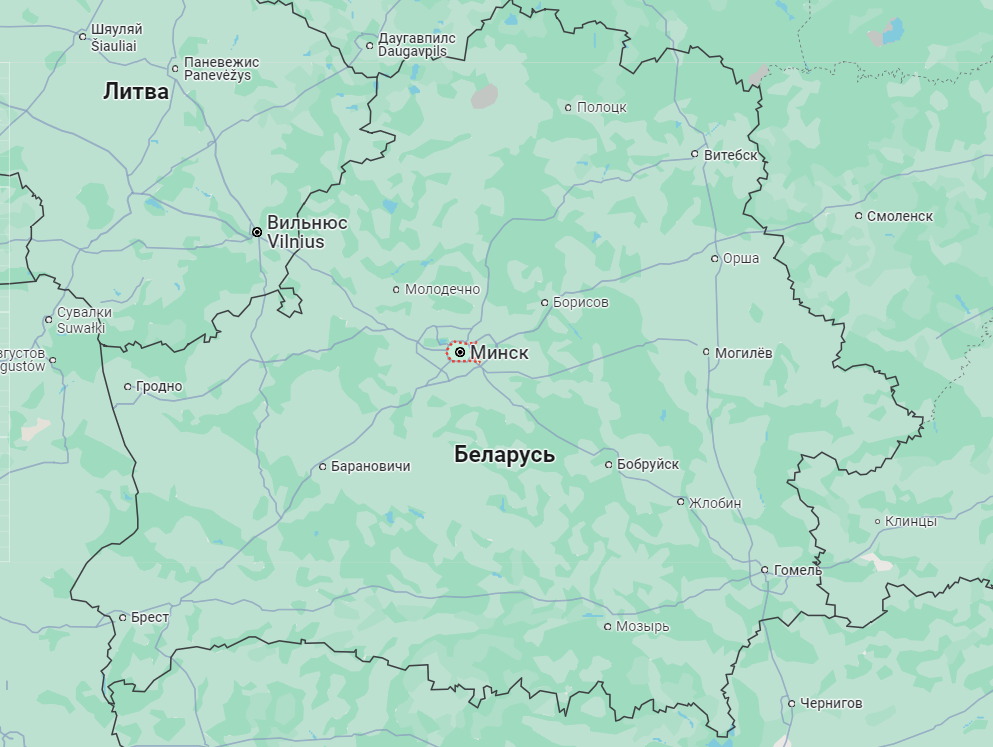

Город Минск
История города
История Минска показывает развитие крупнейшего белорусского города и отражает исторические события региона в течение более 950 лет. Ранние поселения восточнославянских племён кривичей и дреговичей в долине реки Свислочь на территории современного города относятся к IX веку. Эта территория входит в состав Полоцкого княжества в X веке. Первое летописное упоминание о Минске было в 1067 году в связи с битвой на Немиге. В XIV—XVIII веках Минск находился в составе Великого княжества Литовского и Речи Посполитой. В январе 1793 года город вошёл в состав Российской империи. Минск был захвачен немецкой армией в 1918 году во время Первой мировой войны (1914—1918). После поражения Германии город был освобождён. 25 марта 1918 года в Минске была провозглашена независимость Белорусской Народной Республики.
Минск стал столицей 5 января 1919 года после провозглашения Советской Социалистической Республики Белорусь (ССРБ) в составе РСФСР. Период фашистской оккупации во время Великой Отечественной войны (1941—1945) является самым трагическим в истории города. Антифашистское движение в городе и взаимодействие подпольщиков и партизан нанесли существенный урон оккупантам. Красная Армия освободила Минск 3 июля 1944 года.
Благодаря усилиям всей страны и энтузиазму советских людей, город был восстановлен в кратчайшие сроки. В 1974 году Минску было присвоено почётное звание города-героя.
Достопримечательности

Ворота Минска
Ворота Минска — два симметричных здания с башнями на главной площади столицы. Это одна из самых узнаваемых архитектурных достопримечательностей города.
Красный костёл
Красный костёл — знаменитый католический храм, построенный в неороманском стиле. Он является важным культурным и историческим памятником Минска.
Символы города
Герб города Минск представляет собой щит с изображением архангела Михаила, который держит в руках меч и щит.
Расположение на карте

Новости
В Минске готовится к открытию новый бассейн
В этом году прямо у станции метро «Молодежная» достроят большой бассейн, где смогут тренироваться как спортсмены, так и все желающие. Проект реализуется с привлечением технической помощи Китая.
Открытие нового технологического парка
В ближайшее время в Минске состоится открытие нового технологического парка, который станет важным центром инноваций и развития стартапов. Парк будет оснащен современным оборудованием и предоставит рабочие места для сотен специалистов.
Реконструкция исторического центра города
В рамках программы по благоустройству Минска начались работы по реконструкции исторического центра города. Проект включает восстановление фасадов зданий, модернизацию инфраструктуры и создание новых пешеходных зон.
Город сейчас

Минск сегодня — это современный мегаполис с развитой инфраструктурой и высоким уровнем жизни. Здесь находится множество предприятий, научных и образовательных учреждений.
Город активно развивается и привлекает инвестиции со всего мира. В Минске функционируют крупные заводы и фабрики, выпускающие продукцию, востребованную не только в Беларуси, но и за ее пределами.
Город также является центром культурной жизни страны, предлагая широкий спектр мероприятий, от театральных постановок до музыкальных фестивалей.
Дополнительная информация
Минск является крупным культурным центром, где регулярно проходят международные фестивали, выставки и концерты. Город также известен своими зелеными зонами, парками и скверами, которые предоставляют жителям и гостям столицы возможность для отдыха и прогулок на свежем воздухе.